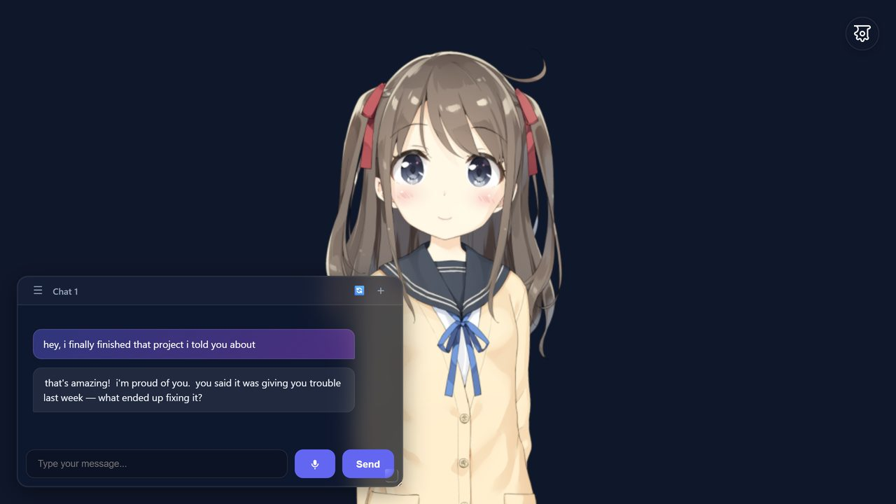

An animated Live2D character that talks back, remembers you, and has a personality you choose. No sign-up, no install, no paywall.

500+ people used WaifuAI this year, across 50 countries · Open source · Nothing to install
Alternate version (bring your own API key) · Source on GitHub
Conversational AI with personality and memory. BYOK via OpenRouter.
Animated character with expressions and reactions.
Local TTS via Kokoro. Multiple voices and languages.
MIT-0 licensed. No account, no tracking, no paywall.
Yes. WaifuAI is free and open source under the MIT-0 license. The hosted version includes a free LLM and free text-to-speech, so there is nothing to pay for and no trial to expire.
No. There is no sign-up, no email and no login. Open the app and start chatting. Your conversations and settings are stored in your own browser.
Yes. WaifuAI runs in the mobile browser with a layout built for small screens. There is no app to install on Android or iOS.
Yes. Bring your own OpenRouter API key and pick any model it offers, or point WaifuAI at any OpenAI-compatible endpoint, including a local one. See the provider docs.
Yes. WaifuAI keeps conversation memory and a customizable persona, so your companion stays consistent between sessions. Memory lives in your browser, not on a server.
Yes. Several Live2D models ship with the app, and you can change the voice and language, the background image, and the persona from the settings panel.
Browser-based AI companion with Live2D, OpenRouter LLM integration, and personality customization.
Animated desktop companion sprites for Hermes Agent. Multi-pet support with live expressions.
Live2D display widget for Hermes Agent. 5 built-in models with drag/resize controls.